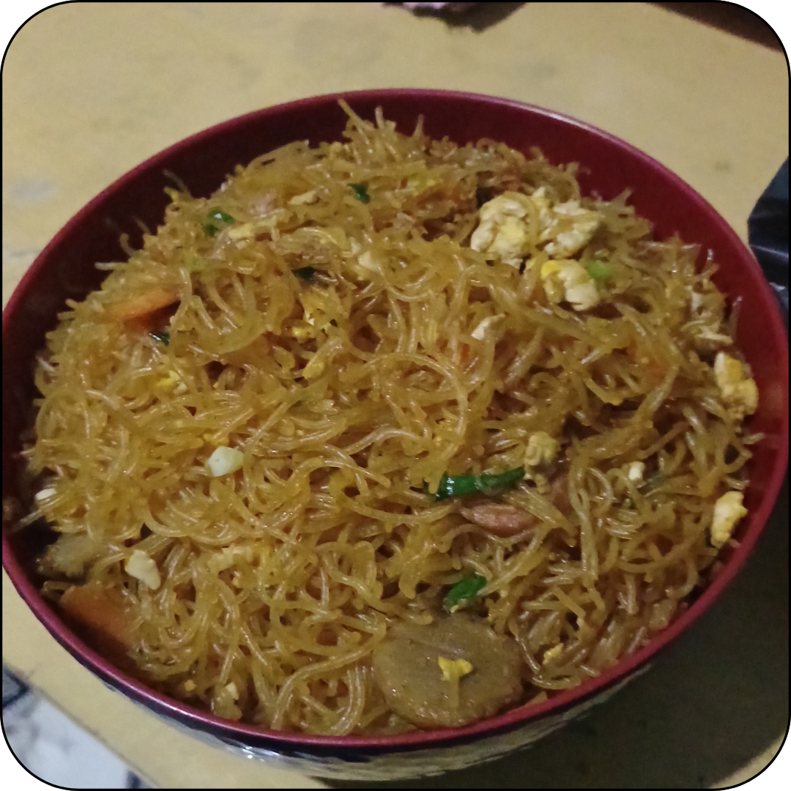
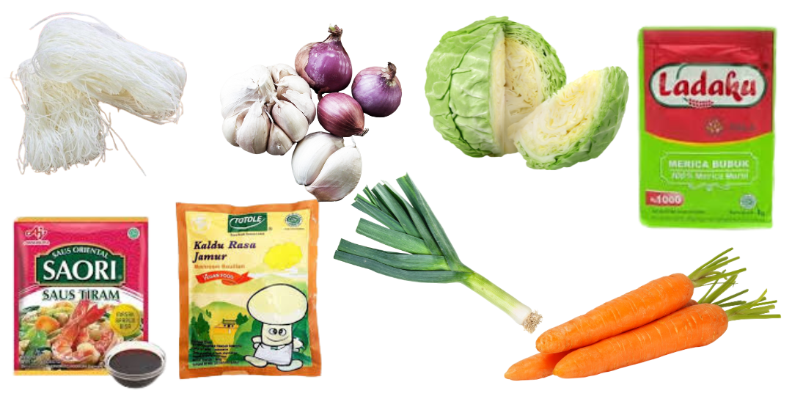

Sofi's Culinary Creations
Home
Makanan
Minuman
Snack
Bihun

Bahan:
Bihun
Wortel
Kubis
Daun Bawang / Pre
Kecap
Saos Tiram
Kaldu Jamur
Penyedap Rasa
Bawang Putih
Bawang Merah

Cara Membuat:
Rebus bihun hingga matang
Ulek bawang putih dan bawang merah
Potong wortel, kubis, dan pre seperti membuat sop
Tumis bumbu halus, lalu masukkan pre setengah. Tambahkan air ulekan
Masukkan wortel dan kubis, tambahkan air sedikit agar menjadi empuk
Masukkan bihun, tambahkan saos tiram dan penyedap rasa sesuai selera
Masukkan sisa pre, tunggu hingga matang